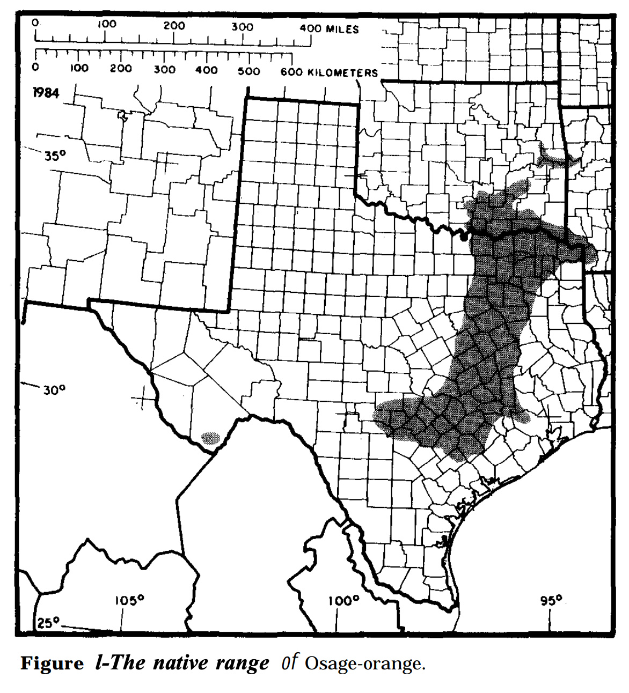

A Limited Native Range
Before Osage-orange became familiar across Iowa and the Midwest, its native range was much smaller. Iowa State University Extension places it primarily in eastern Texas, southeastern Oklahoma, and southwestern Arkansas. The species was therefore not originally widespread across the central United States. Its much larger modern distribution came later, as people deliberately moved and planted the tree for agricultural purposes.
Sources: Iowa State University Extension and Outreach; U.S. Forest Service